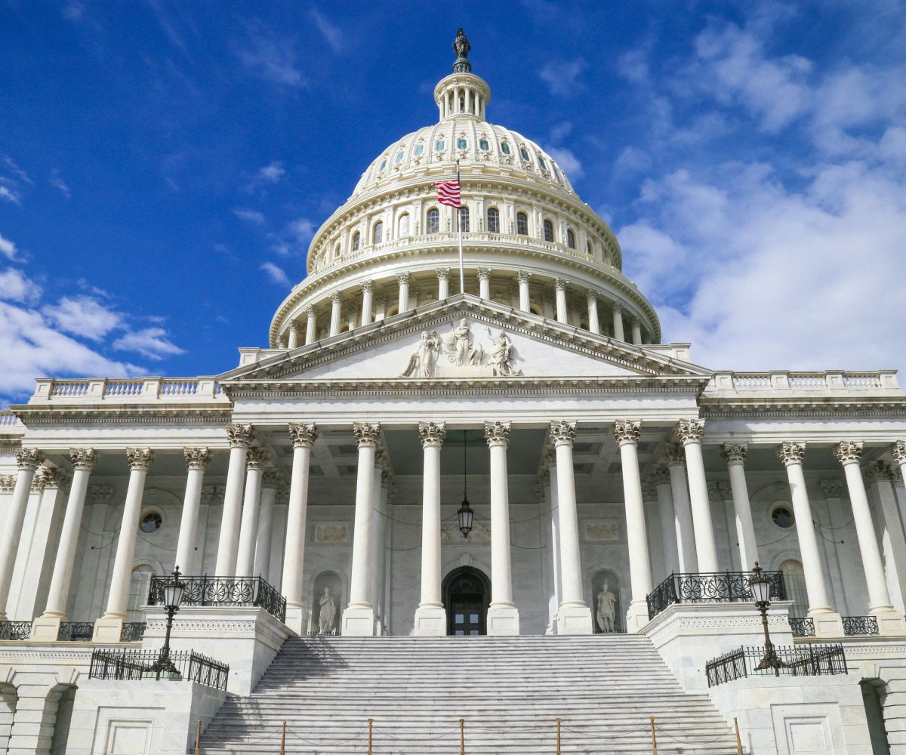

We're learning about the American Revolution
"Students will investigate the organization of government in the United States, the division of power between state and national government and the separation of powers in various branches of government. Formal and informal rules which regulate the political process will be examined. The procedure open to the individual citizen to influence the political decision-making process will be emphasized. Election procedures, political party activities, pressure of special interest groups, conditions influencing voter choices, limitations placed on decision makers and rights and responsibilities of citizens will be studied. Students in the course with engage in the development of a Democracy Activities Portfolio." Home